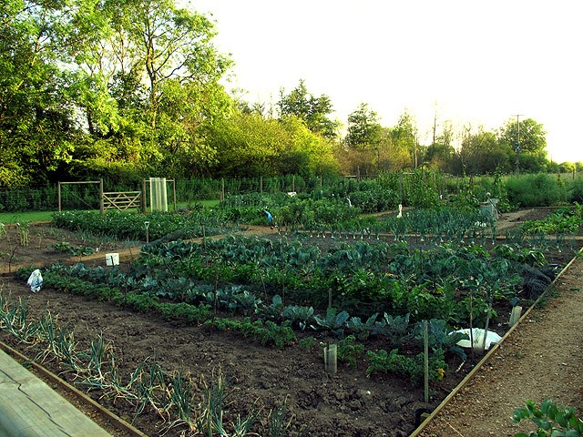
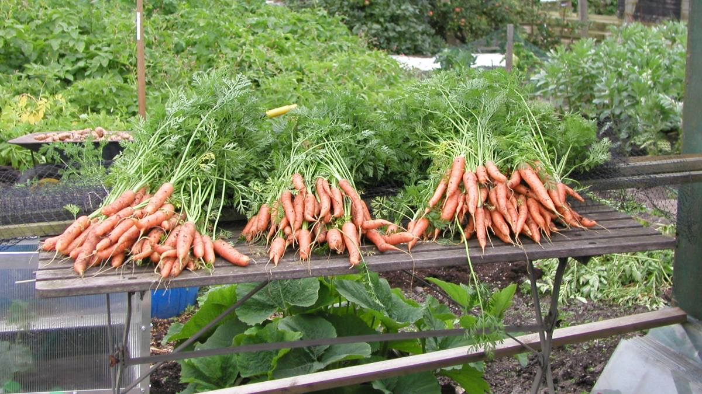
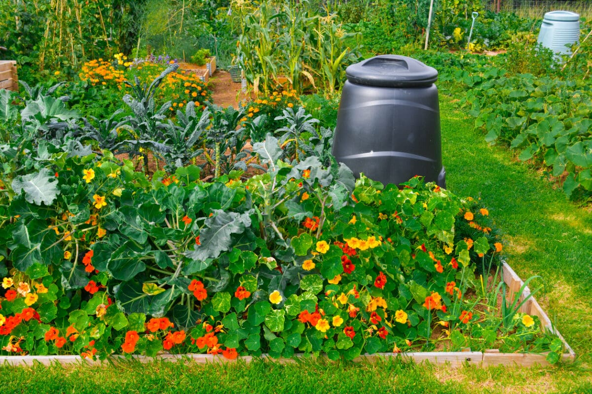
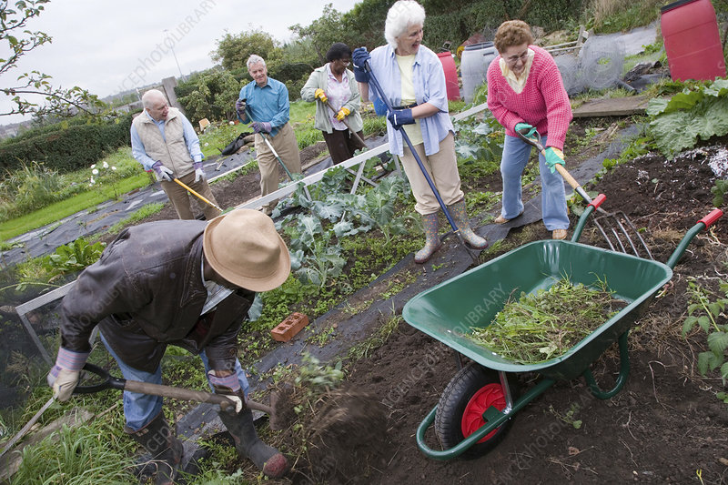

Welcome
Welcome to our community allotment page. We grow fresh produce and bring people together in a friendly, supportive environment.
About Us
Our allotment is a communal space where senior citizens can garden, socialise, and enjoy fresh vegetables and flowers. It's a great way to keep active, make new friends and enjoy the outdoors!
Where are we?
You can find us in Willesden Green, just 2 minutes from the station next to the church. Open from 5am in the Summer, sunlight in Winter. Closed at 10pm.
Gallery



Join Us
Interested in joining? We'd love to hear from you!
Email: allotment@ldirect.com
Telephone: 07777 777778